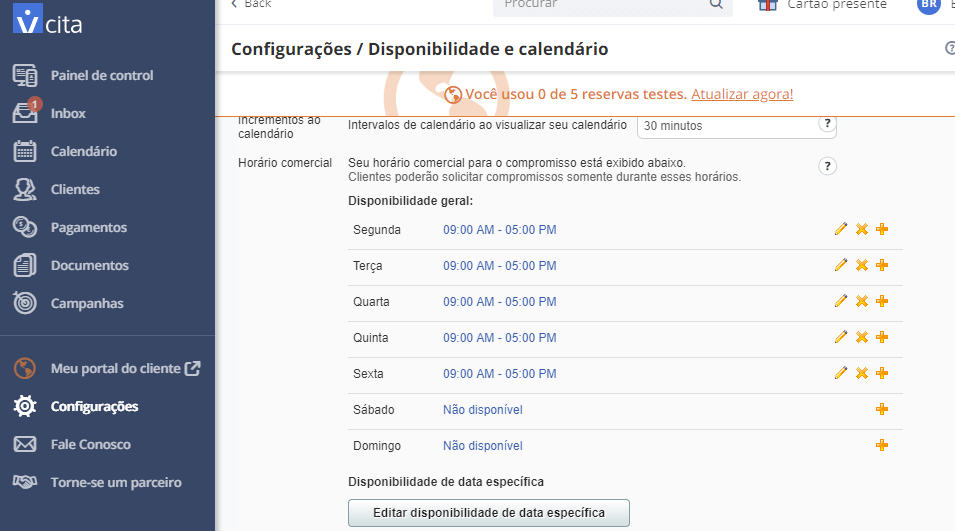

Agendamento de clientes pelo WordPress
Já imaginou ter um sistema de agendamento completo no seu site WordPress? No post abaixo apresentamos um plugin que ajuda a fazer isso de forma simples.
Agendamento no WordPress
Um dos 4 sites que ensinamos a criar no nosso curso “WordPress Prático – Aprenda criando 4 sites reais”, no Udemy, foi de consultório médico. Nele temos um formulário de agendamento, que envia e-mail para o administrador do site, para avaliar possibilidade de marcação de consulta. Mas há alguns dias um aluno perguntou a possibilidade de ter agendamento de clientes no WordPress com opções de horários disponíveis. Dessa forma resolvi apresentar um plugin que atende essa necessidade. Ele é uma boa opção para profissionais liberais terem uma presença online melhor.
O plugin de agendamento de clientes
O plugin usado é o “Appointment Booking and Online Scheduling”, desenvolvido pela vCita. Ele possui boa avaliação, mais de 10 mil instalações e atualizações constantes, além de ser bem simples para configurar o agendamento de clientes. Dessa forma se torna uma boa opção para resolver nosso problema.
A vCita é a responsável pelo desenvolvimento do plugin. É uma empresa que disponibiliza uma série de serviços no modelo SaaS, incluindo a possibilidade de agendamento de clientes. Eles possuem diversos planos diferentes, com preços e funcionalidades diversos, mas possui um plano de entrada gratuito que permite avaliar sem custo. Vale olhar a página de planos da empresa para entender quais as limitações deste plano.
Depois de instalar e ativar o plugin é possível visualizar o opção “Settings” na área de plugins instalados. Também fica disponível a opção “vCita Online Scheduling” no menu de opções da área administrativa do WordPress.
As configurações necessárias
A primeira configuração necessária é o seu e-mail, para criação da conta gratuita no vCita. Ao informar o e-mail e clicar em OK, o sistema pede nome e senha. Além disso, serão pedidas mais algumas informações. Preencha o básico, de acordo com o que o sistema indica como obrigatório, e conclua o cadastro. Ao final do cadastro você será direcionado de volta para a área administrativa do WordPress. Embora sejam exibidas algumas opções, vamos nos concentrar no item “Scheduling Calendar”. Ou seja, escolha a opção “Edit”, como indicado na imagem abaixo.
Opções de customizações
Existem diversas opções de customizações disponíveis no serviço de agendamento. Por exemplo a definição de serviços, com tempo e local (pessoalmente, por telefone ou online). Além disso, é possível definir o horário comercial e a disponibilidade. Se não houver possibilidade de atendimento em um determinado dia da semana é preciso apenas excluir o mesmo na customização.

A visão do Cliente
Por fim, o cliente tem no site uma opção de contato. Para realizar o agendamento, basta seguir o passo-a-passo abaixo:
Passo 1: Usar o recurso de contato
Escolher a opção de contato pelo site clicando no botão disponibilizado na base da tela.
Ao clicar no botão “Entrar em contato” é exibida a opção de agendamento:
Passo 2: Escolher o serviço
São exibidos os serviços cadastrados pelo administrador do site. É preciso escolher o serviço para depois escolher o horário.
Passo 3: Definição de horário
Por fim é preciso escolher um dos horários disponíveis.
No canal do Presença Online .NET disponibilizei um vídeo explicando este passo-a-passo. Aproveite para se inscrever no nosso canal e ser avisado sobre novas publicações.